Open the Study Hub login, enter your approved UNE email, and this note will unlock automatically.
The infectious side of cardio: how a sterile clot becomes a septic vegetation, the organisms and the patients they pick, Duke 2023, targeted antibiotics — then myocarditis (mostly viral) and pericarditis (that pain pattern).
The infectious side of cardio — endo, myo, peri
One lecture over two sessions: infective endocarditis (the big one — lining and valves), then a "fairly brief" pass through myocarditis and pericarditis ("Myo and Peri — sounds like a sixties singing group that didn't make it"). The microbiology is the core: which organism, which patient, which valve, which drug.
Endocardium — mostly valves. Bacteria (staph, strep, enterococci) > fungi. Viruses: no. Usually >50 y.
Myocardium. Viruses are the main cause. Any age, peak 20–50 y. Often undiagnosed.
Pericardial sac. Mostly viral; bacterial = "purulent". Sharp pain better leaning forward, rub, ST↑/PR↓.
Definition · acute vs subacute · the numbers
Infective endocarditis = relatively rare, non-contagious, chronic, often life-threatening infection and inflammation of the endocardial surface — mostly native or prosthetic valves, but also mural endocardium, septal defects (usually ventricular), arteriovenous/arterial shunts and intravascular devices. Untreated, it is almost invariably fatal; survivors often carry lasting effects.
| Feature | Acute | Subacute |
|---|---|---|
| Course | Fulminant, abrupt | Indolent |
| Fever / signs | High fever, systemic toxicity, ↑ WBC | Low-grade fever, night sweats, weight loss |
| Valve | Can hit a normal valve | Previously damaged valve (historically rheumatic) |
| Organisms | "Professional" pathogens: S. aureus, S. pneumoniae, S. pyogenes | Less virulent, often normal flora: viridans strep, enterococci |
| Death (untreated) | < 6 weeks — catastrophic heart failure | 6 weeks → months — CHF |
| Empiric antibiotics it triggers | Broad (think MRSA) | More targeted (viridans, enterococci) |
The "official" modern scheme is etiology-based (organism → course, likelihood of pre-existing heart disease, antibiotic choice), but clinicians, UpToDate and even the 2023 Duke criteria still use acute/subacute as a bedside read of speed and expected virulence. Don't correct your attending.
~1–3/100,000 (lecture; outline 3–7), rising slightly. The US has the highest incidence among Western countries.
In-hospital 15–20%; 1-year up to 40%.
About half eventually need valve surgery (usually replacement).
Acute was ~20%, subacute ~75%. Now in industrialised countries ~75% is acute — mostly S. aureus (plus S. epidermidis, enterococci).
Q: A patient develops high fever, rigors and rapidly worsening heart failure over 10 days; the valve was previously normal. Which organism class tops the differential, and how broad should empiric therapy be?
Acute IE — Staphylococcus aureus (a "professional pathogen" that attacks normal valves). Empiric therapy must be broad, covering MRSA.
Who gets it — and why IDU is its own story
| Risk factor | Detail |
|---|---|
| Age / sex | >50% of patients are >50 years; rare in children unless there's a congenital structural defect. Men > women (3:1 to 9:1) — except women <35, whose risk is slightly higher. |
| Poor dentition / recent dental surgery | Chronic odontogenic infection (gingivitis, periodontitis, abscess) → systemic inflammation damaging endothelium plus intermittent bacteremia. Riskiest procedures manipulate or perforate the gingiva, oral mucosa or periapical region. |
| Structural heart disease | Present in 75% of IE patients. Children: congenital (VSD, bicuspid aortic valve, PDA, coarctation). |
| Valve disease | RHD (GAS M-protein cross-reactivity) was the historic #1 precursor → subacute viridans IE — now ~9% in the US (higher in low-income countries). Replaced by MVP with regurgitation (~30%), aortic stenosis/regurgitation; tricuspid regurgitation mainly in IDU. |
| Prior IE | 2–8% recur |
| Recent valve replacement | Only ~1–6% of US cases |
| Indwelling vascular devices / CIEDs (pacemakers, ICDs) | ~23% of cases — skin flora (S. epidermidis) carried in at placement |
| Injection drug use | See box → right-sided IE |
| Cardiac bypass surgery | Nosocomial IE |
| Chronic hemodialysis | ~300/100,000 — "huge" |
| Immunosuppression | HIV, steroids, malignancy |
| Poorly controlled diabetes | Hyperglycemia impairs immunity; more S. aureus skin colonisation; endothelial damage; frequent punctures / dialysis; worse prognosis |
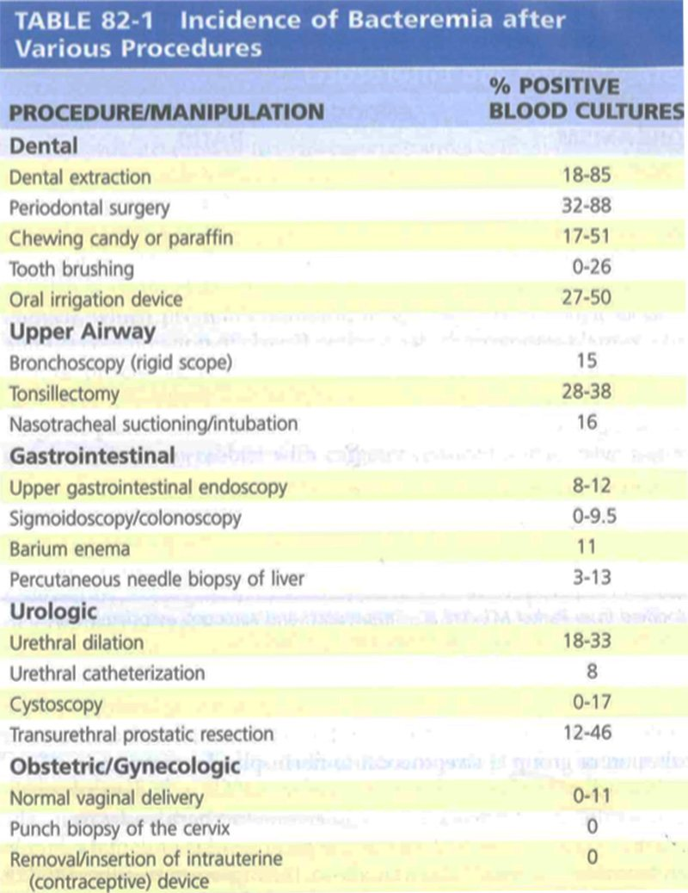
Q: Why do people who inject drugs get right-sided (tricuspid) endocarditis, and which organism is most likely?
Injected particulates such as talc damage the tricuspid/pulmonic endothelium, and injected skin bacteria reach the right heart first. S. aureus (skin/nares colonisation) is most common.
Injury → sterile clot → bacteremia → biofilm → vegetation
Normal endocardium resists bacteria and fungi (which is why IE is hard to reproduce in animal models). You need two things: an endocardial injury and a bacteremia.
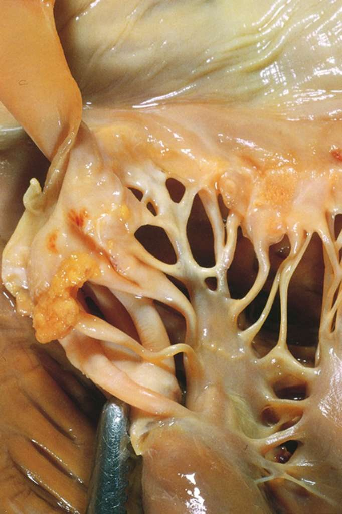
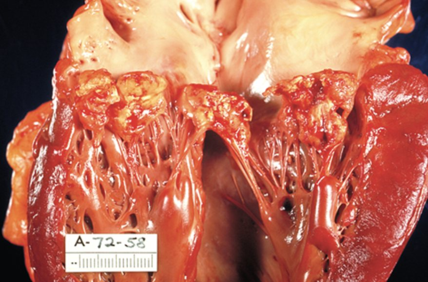
The best IE pathogens (S. aureus, S. epidermidis) are biofilm producers. Biofilm bacteria are ~500× more antibiotic-resistant: drugs and antibodies penetrate poorly, and the bacteria slow or stop growing — while most antibiotics (cell-wall, protein-synthesis, nucleic-acid inhibitors) need actively growing bacteria.
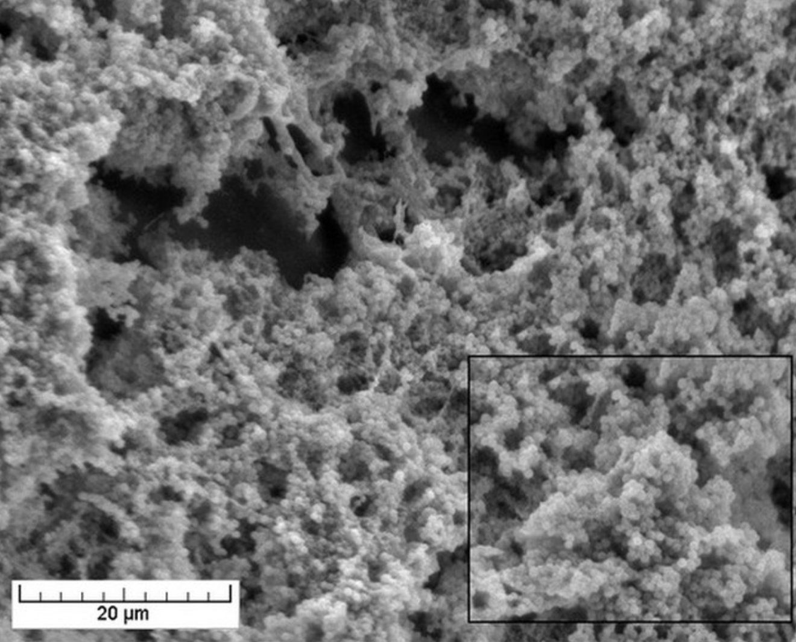
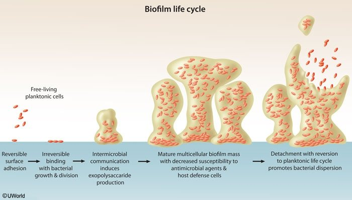
High-inoculum seeding of the blood → metastatic infection (esp. S. aureus, which infects anything it hits).
Cytokines + proteases + bacteria destroy the valve → perforation, rupture, abscess, aneurysm.
Friable vegetations break off → septic emboli: ischemic stroke, cerebral hemorrhage, meningitis, brain abscess, mycotic aneurysm, organ infarcts.
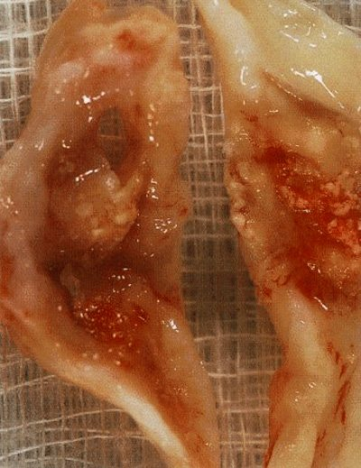
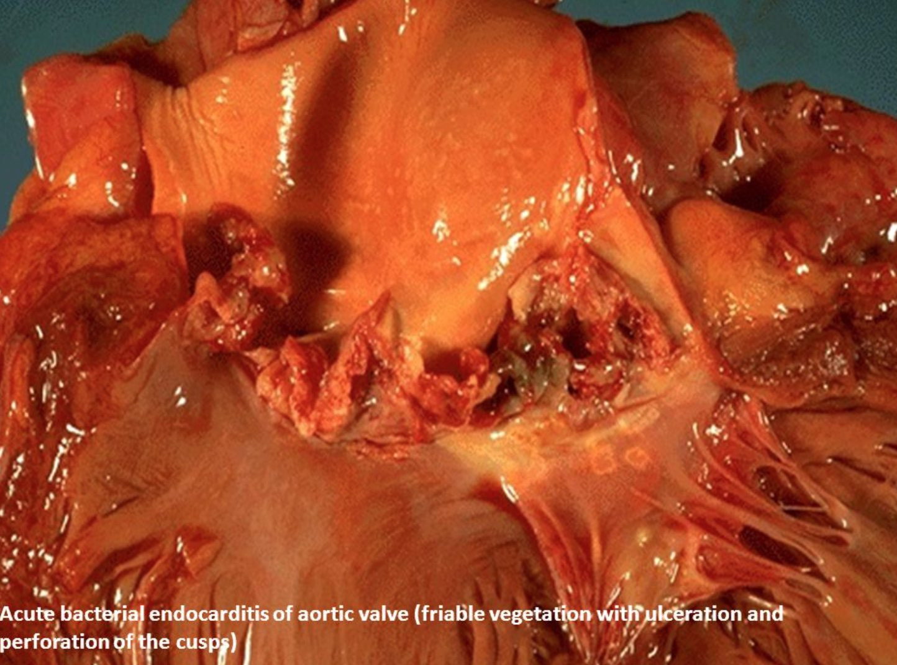
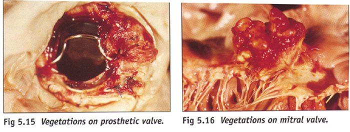
| Side | Valve | Frequency |
|---|---|---|
| Left | Mitral | 28–45% — most common |
| Aortic | 5–36% | |
| Mitral + aortic | 0–35% (usually one or the other) | |
| Right | Tricuspid | 0–6% — but ~60% in IDU |
| Pulmonic | Rare (≤10% in IDU) |
Q: Why does IE need prolonged bactericidal therapy even with a susceptible organism?
Organisms sit inside a fibrin–platelet vegetation and biofilm at up to 109/g, poorly penetrated and metabolically slow, so drugs that need growing bacteria work poorly — you must kill, not just inhibit, for weeks.
Staph, strep, enterococci = 80–90%
| Organism | % of IE (slide) | Classic setting |
|---|---|---|
| S. aureus | 31% | Most common; acute; any valve incl. normal, prosthetic, right-sided; IDU |
| Viridans strep | 17% | Subacute; damaged valve; dental/oral source |
| Coagulase-negative staph | 11% | Prosthetic valves, devices, nosocomial |
| Enterococci | 11% | Nosocomial — urinary catheters, IV lines |
| S. gallolyticus (bovis) | 7% | Colon cancer / IBD |
| Other streptococci | 5% | — |
| Culture-negative (Bartonella, Coxiella…) | 8% | Animal contact; prior antibiotics |
| Anaerobes | 2–16% | Odontogenic; prosthetic valves |
| GNR (non-HACEK) | 2% | Elderly, silent UTI; health-care contact |
| HACEK | 2% | Damaged valves; oral/GI flora |
| Fungi (Candida, Aspergillus) | 2% | Immunocompromised only |
| Viruses | ? | No conclusive evidence |
GPC + catalase-positive + coagulase-positive = S. aureus — sometimes that's all a board question gives you.
Most common cause; fulminant/acute; normal, prosthetic and right-sided valves; survival <70%.
Most common bacterium on skin → anything touching skin then going inside (valve, line, Foley, CIED) carries it in. Prosthetic valve IE (outline: ~40% of PVE); subacute; nosocomial; most are methicillin-resistant.
There is no "Streptococcus viridans." Subgroups: sanguinis, bovis, mutans, mitior. Pre-antibiotic era #1 cause (RHD, subacute) — now <9% in the US, 17% worldwide.
IE with S. gallolyticus → look for colon cancer or IBD ("I'm giving you the answer to a board question"). Board add-on → colonoscopy.
Urinary/renal catheters, IV lines; usually damaged valves.
Non-HACEK: E. coli, Klebsiella — elderly with undiagnosed UTIs. HACEK: slow-growing oral/GI gram-negatives on damaged valves — rare but over-tested.
Propionibacterium*, Lactobacillus*, Clostridium*, Bacteroides fragilis, Fusobacterium*, Porphyromonas* (*oral origin) — periodontitis, gingivitis, dental abscess. Mostly prosthetic valves; mortality 21–43%.
Candida, Aspergillus (± Trichosporon). Large, bulky vegetations that embolise and invade myocardium; antifungals penetrate poorly and are toxic → survival <50%, usually needs surgery.
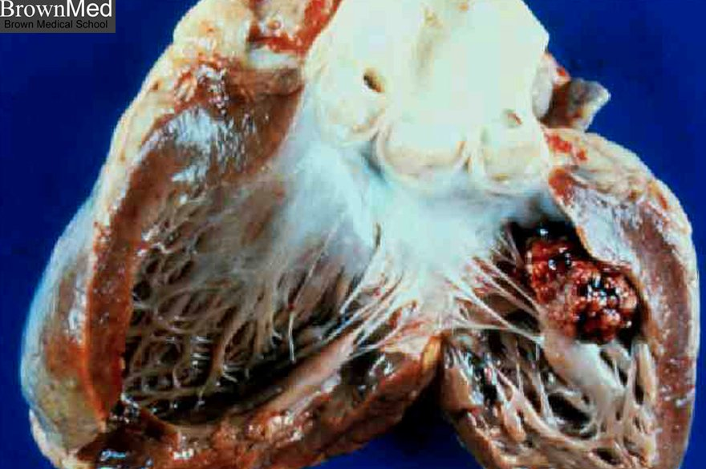
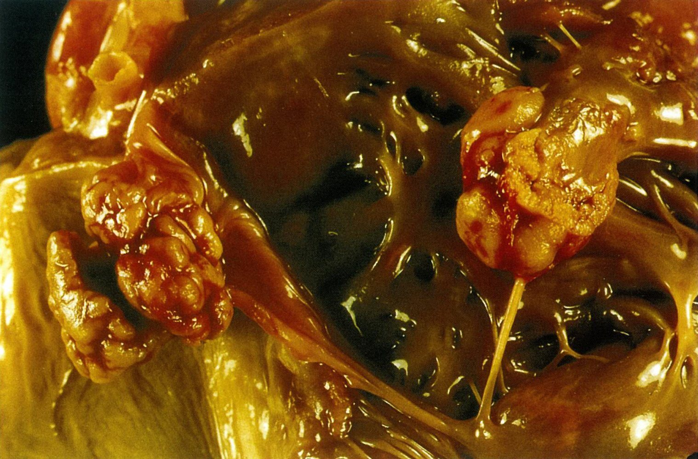
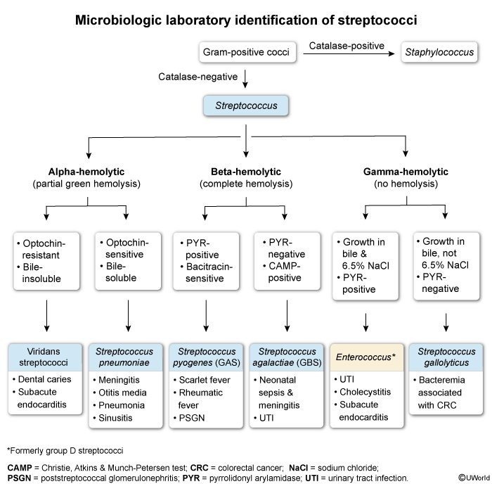
Haemophilus · Aggregatibacter · Cardiobacterium · Eikenella · Kingella — slow-growing gram-negatives, pre-existing valve disease, ~2%.
Q: A 68-year-old with iron-deficiency anemia has endocarditis; blood cultures grow a non-enterococcal group D streptococcus. What else must you investigate?
Streptococcus gallolyticus (bovis) IE is associated with colorectal cancer (and IBD) → colonoscopy.
Q: Three months after an aortic valve replacement, a patient develops subacute IE. Most likely organism and its key virulence factor?
Staphylococcus epidermidis (coagulase-negative) introduced from skin — protected by biofilm on the prosthetic material.
Q: A shepherd with fevers has echo-proven vegetations but three negative blood cultures. Likely organism and how is it confirmed?
Coxiella burnetii (Q fever) — culture-negative IE from animal contact; confirm by PCR or phase I IgG titre >1:800 (a Duke major criterion).
"It's a mess" — fever, murmur, signs
Presentation ranges from rapidly progressive to indolent, so diagnosis is often delayed — clinicians chase the embolic or immune consequence (e.g. a "renal problem") instead of the source.
With chills, anorexia, headache, myalgia/arthralgia, night sweats, dyspnea, pleuritic pain. Common — but not diagnostic.
1. Holosystolic (MR) · 2. Diastolic (AR) · 3. Holosystolic TR (right-sided).
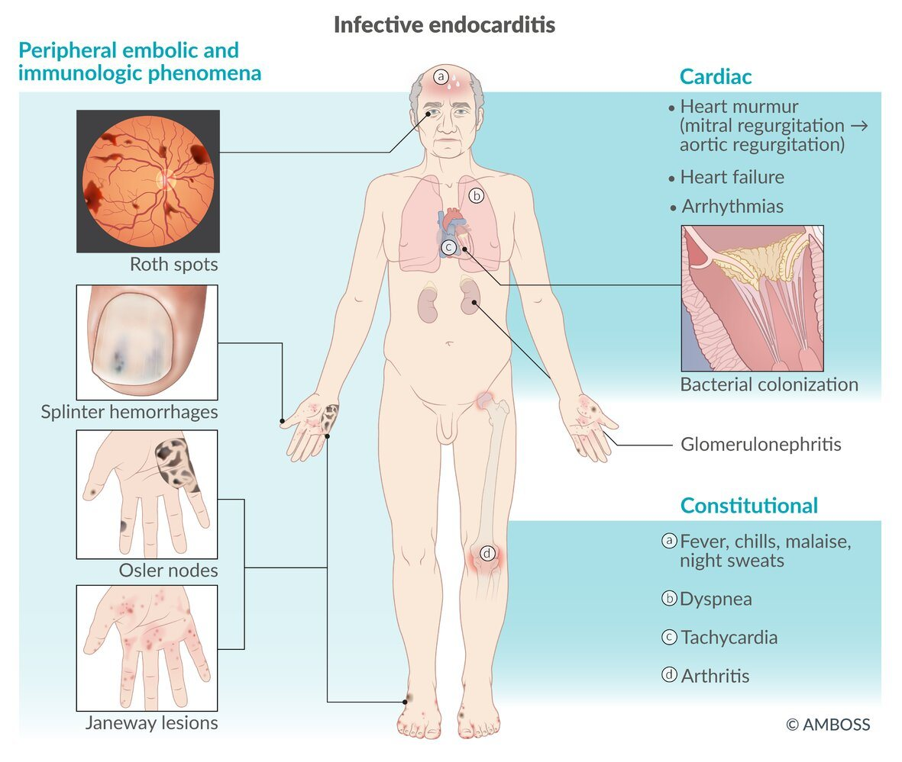
| Sign | How common | Mechanism | Notes |
|---|---|---|---|
| Splenomegaly | ~40% | Systemic infection | Supportive |
| Petechiae | ~40% | Microemboli break capillaries | Conjunctiva, buccal mucosa/palate, extremities; more with S. aureus |
| Splinter hemorrhages | Supportive | Capillary hemorrhage + clot | Non-blanching red/brown linear streaks under nails; left-sided, S. aureus |
| Clubbing | <10% | Vasodilation from clumped platelets | — |
| Osler nodes | <10% | Immune complexes | Painful nodules, finger/toe pads |
| Janeway lesions | <10% | Septic emboli → dermal micro-abscesses | Painless hemorrhagic plaques, palms/soles; S. aureus |
| Roth spots | <10% | Immune complexes | Retinal hemorrhages (pale centre) |
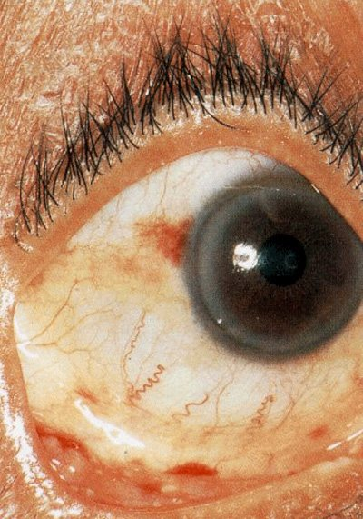
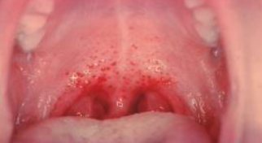
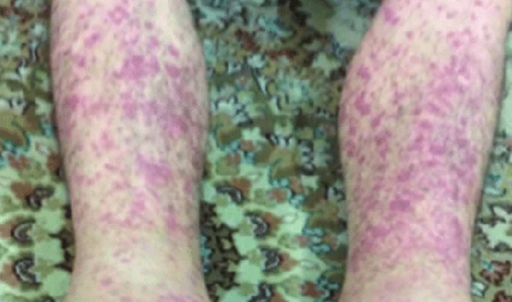
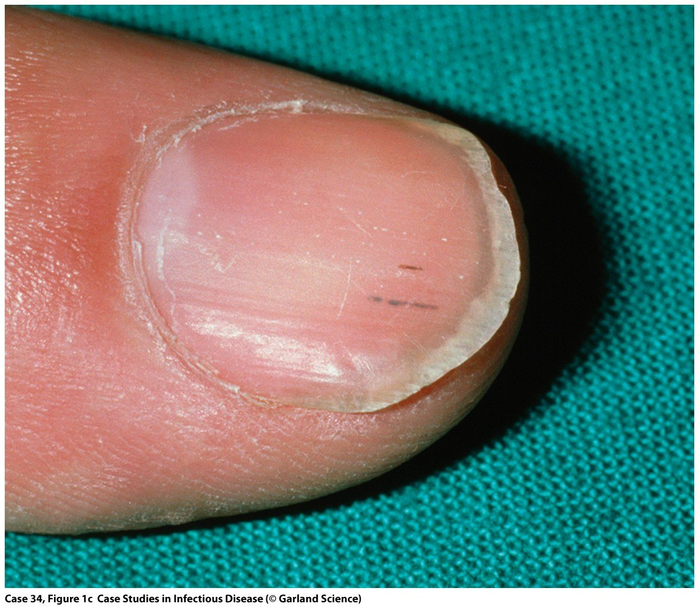
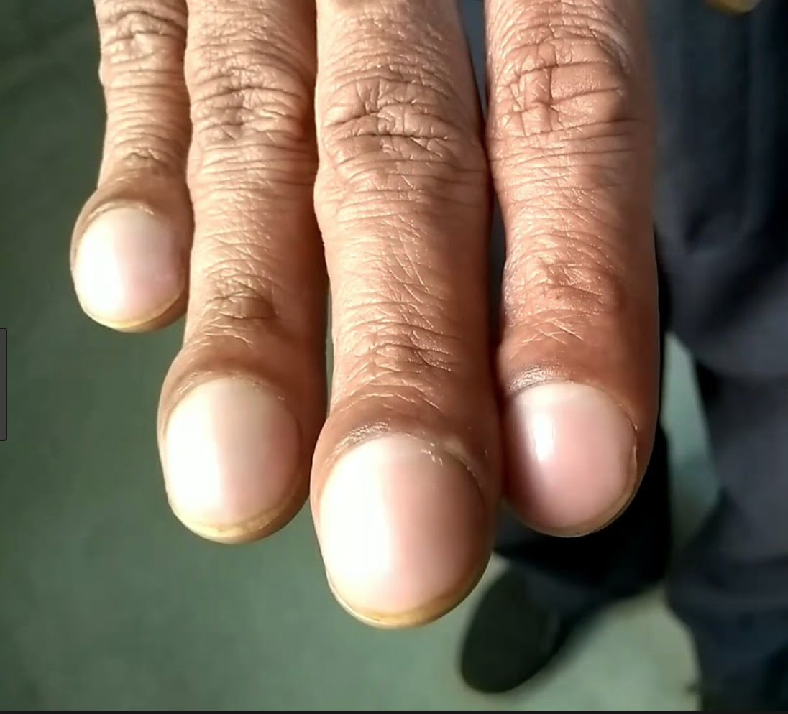
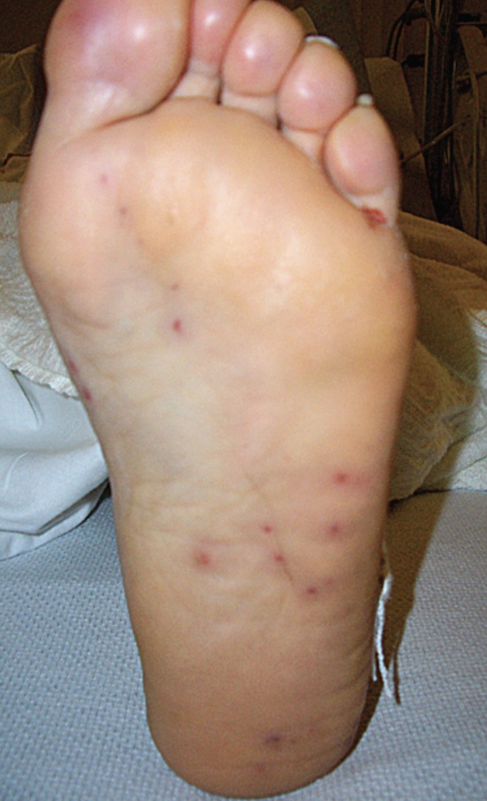
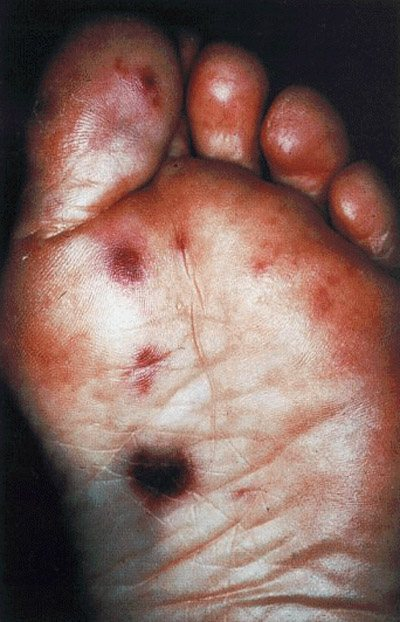
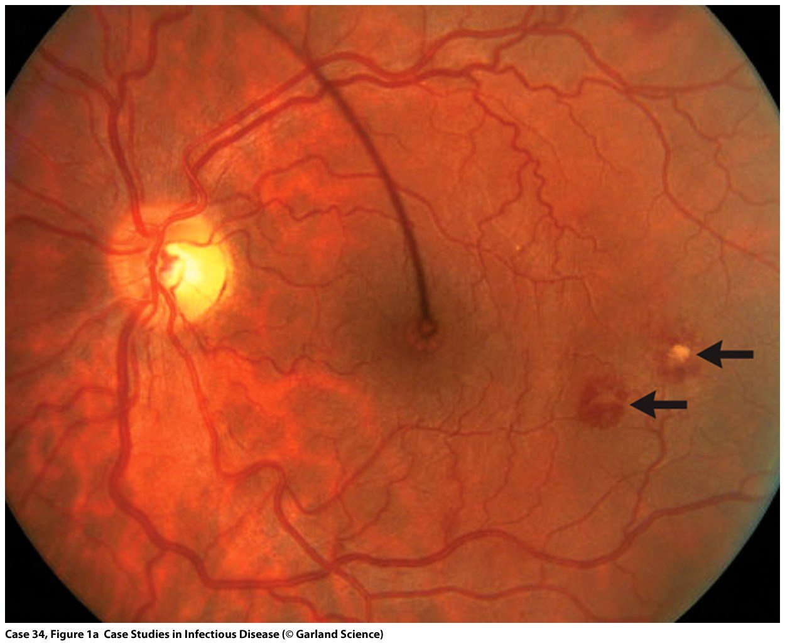
Immune complexes: Osler nodes, Roth spots, glomerulonephritis, positive rheumatoid factor. Emboli: Janeway lesions, splinters, petechiae, organ infarcts. Board add-on "Osler = Ouch".
Q: A febrile man who injects heroin has cough, hemoptysis and multiple peripheral cavitating nodules on chest CT, but no murmur. Diagnosis?
Right-sided (tricuspid) IE with septic pulmonary emboli, most likely S. aureus; right-sided IE often has no audible murmur.
Q: Which two peripheral IE signs are caused by immune complexes rather than emboli?
Osler nodes (painful finger/toe pads) and Roth spots (retina). Janeway lesions are embolic micro-abscesses.
Duke 2023 · labs · imaging
Suspect IE in any patient with bacteremia with a typical IE organism (staph, strep, enterococci) plus cardiac or non-cardiac risk factors (IDU, immunosuppression, recent surgery or dental work). Diagnosis = clinical picture + blood cultures + imaging, organised by the Duke criteria (2023 version — most sensitive; best for left-sided).
| Tier | Criterion |
|---|---|
| MAJOR — microbiologic | Typical IE organism in ≥2 separate blood-culture sets |
| Occasional/rare IE organism in ≥3 separate sets | |
| Positive PCR for Coxiella, Bartonella or T. whipplei · Coxiella phase I IgG >1:800 (or single positive culture) · Bartonella IgG >1:800 | |
| MAJOR — imaging | Echo / cardiac CT: vegetation, leaflet perforation or aneurysm, abscess, pseudoaneurysm, intracardiac fistula · new significant regurgitation (worsening of old isn't enough) · new partial prosthetic dehiscence |
| FDG-PET/CT: abnormal activity on native/prosthetic valve (≥3 months after implant), aortic graft, device leads | |
| MAJOR — surgical | IE seen at cardiac surgery (without other major / pathologic criteria) |
| MINOR | Predisposition: prior IE, prosthetic valve, valve repair, congenital heart disease, >mild regurgitation or stenosis, endovascular CIED, HOCM, injection drug use |
| Fever ≥38.0 °C (100.4 °F) | |
| Vascular: arterial emboli, septic pulmonary infarcts, cerebral/splenic abscess, mycotic aneurysm, intracranial hemorrhage, conjunctival hemorrhage, Janeway lesions, purulent purpura | |
| Immunologic: positive RF, Osler nodes, Roth spots, immune-complex glomerulonephritis | |
| Microbiologic not meeting major; organism from another sterile site; lone skin-bacterium PCR on valve/wire | |
| Imaging: PET/CT activity <3 months after implant · Exam (no echo available): new regurgitant murmur |
| Result | Requires |
|---|---|
| Definite IE | Pathologic criteria (organism or histology in vegetation, cardiac tissue, explanted valve, graft, CIED or embolus) — or clinical: 2 major · 1 major + 3 minor · 5 minor |
| Possible IE | 1 major + 1 minor, or 3 minor |
| Rejected IE | Firm alternative diagnosis · resolution with <4 days of antibiotics · no pathologic IE at surgery/autopsy after ≤4 days of antibiotics · criteria for possible/definite not met |
Two majors, one major plus three minors, or five minors. Possible = "1+1 or 3".
| Test | Sensitivity | Best for |
|---|---|---|
| TTE | ~65% | Cheap first look: valve/paravalvular abnormality, some vegetations, abscess, new regurgitation |
| TOE | ~95% | When TTE is negative; vegetation size/nature → embolic risk; perforation |
| Cardiac CT | — | Perivalvular abscess |
| FDG-PET/CT | — | Inflammation (high glucose uptake) — prosthetic valves, devices |
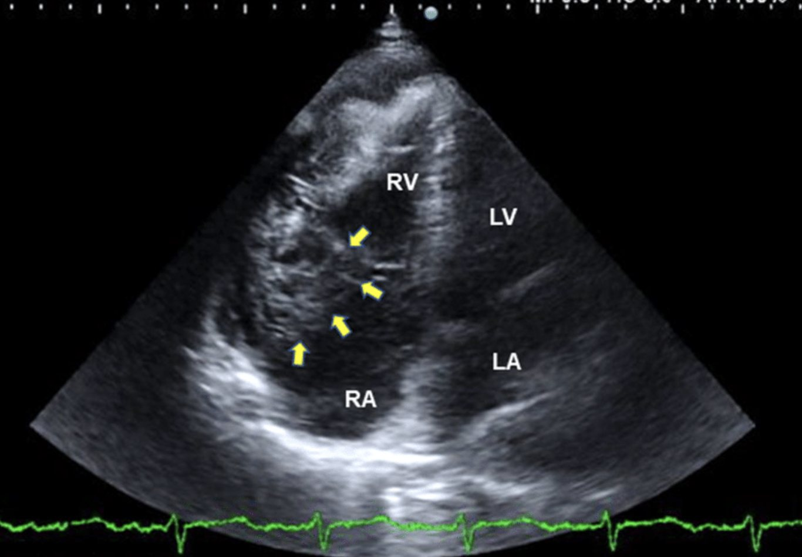
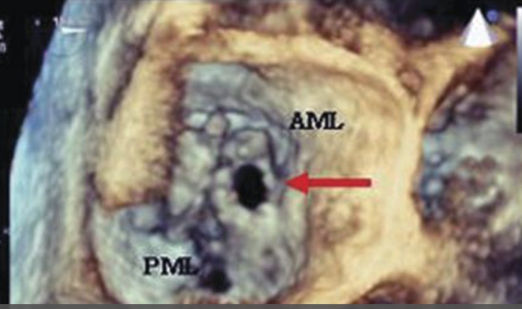
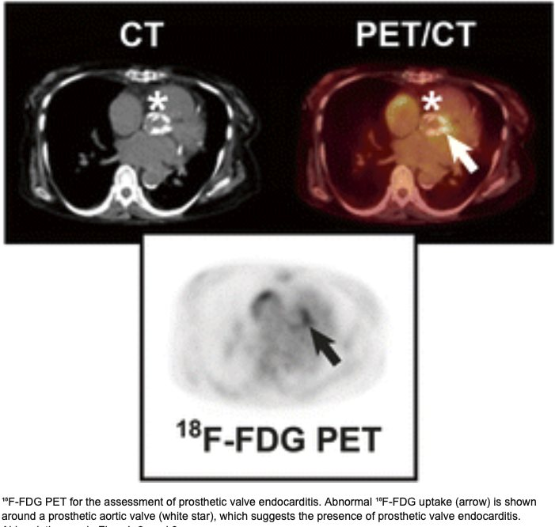
Also recommended: a full dental evaluation (caries, periodontal pockets, gingival inflammation) — a clue to anaerobes or viridans strep.
Q: Fever 38.6 °C, known MVP with regurgitation, and Osler nodes; blood cultures and echo are pending. How many Duke criteria are met, and what's the category so far?
Three minor (predisposition, fever, immunologic phenomenon) → possible IE. One major (≥2 positive typical cultures or a vegetation on echo) would make it definite (1 major + 3 minor).
Q: TTE shows no vegetation in a patient with high suspicion of IE. Next imaging step and why?
Transesophageal echo — ~95% sensitive vs ~65% for TTE; also sizes the vegetation to estimate embolic risk.
Bactericidal, long, often surgical
| Organism | Regimen | Duration |
|---|---|---|
| S. aureus — methicillin-sensitive | Nafcillin, oxacillin or flucloxacillin | Handout says "3–5 days" — likely a typo; standard ~6 weeks Board add-on |
| S. aureus — methicillin-resistant | Vancomycin + rifampin | 6 weeks |
| S. epidermidis (most MR) | Vancomycin + rifampin | >6 weeks |
| Viridans — PCN-sensitive | PCN G or ceftriaxone | 4 weeks |
| Viridans — PCN-resistant | PCN G + gentamicin, or vancomycin | 4 weeks |
| Enterococci — PCN-sensitive | PCN G + gentamicin, or ceftriaxone + gentamicin, or vancomycin | 4 weeks |
| Enterococci — PCN-resistant | Gentamicin + ampicillin-sulbactam, or vancomycin | 6 weeks |
| GNR (non-HACEK) — Enterobacteriaceae | Gentamicin + cefepime, or meropenem | 6–8 weeks |
| GNR — Pseudomonas | Tobramycin + cefepime, or meropenem | 6–8 weeks |
| HACEK | Ceftriaxone or ciprofloxacin | 4 weeks |
| Candida | Caspofungin or liposomal amphotericin B (6–8 wk) → fluconazole/voriconazole | Suppression for life |
| Aspergillus | Liposomal amphotericin B + voriconazole (6 wk) → voriconazole | For life |
| Coxiella burnetii | Quinolone + doxycycline | — |
| Bartonella | Doxycycline + rifampin (corrected in class — not gentamicin) | — |
Q: An acutely ill patient with suspected IE is in the ED. What must happen before the first antibiotic dose, and what is the empiric regimen?
Draw three separate blood-culture sets (pre-treatment antibiotics are the commonest cause of culture-negative IE), then start vancomycin + cefepime (or ceftriaxone) to cover MRSA/MSSA, CoNS, streptococci and enterococci.
Q: Why are bactericidal rather than bacteriostatic drugs required for IE?
The dense, poorly perfused vegetation and biofilm protect organisms from host defences, so the drug itself must kill the bacteria; suppression alone lets them regrow.
Mostly viral · often missed · any age
Inflammation of the myocardium — infectious, immune-mediated or toxic — hitting myocytes (necrosis, contractile dysfunction), the conduction system, autonomic nerves and interstitium. Often unsuspected: ~4% of unrelated autopsies show it, more in young sudden deaths. Unlike IE it affects all ages, mostly 20–50 years.
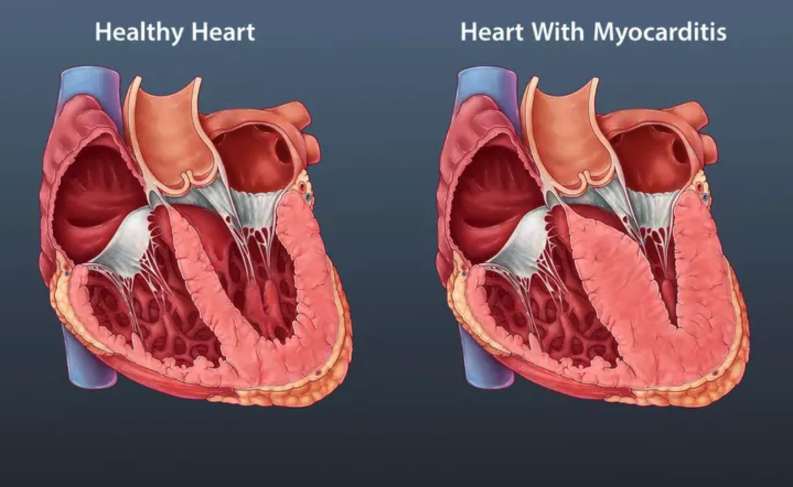
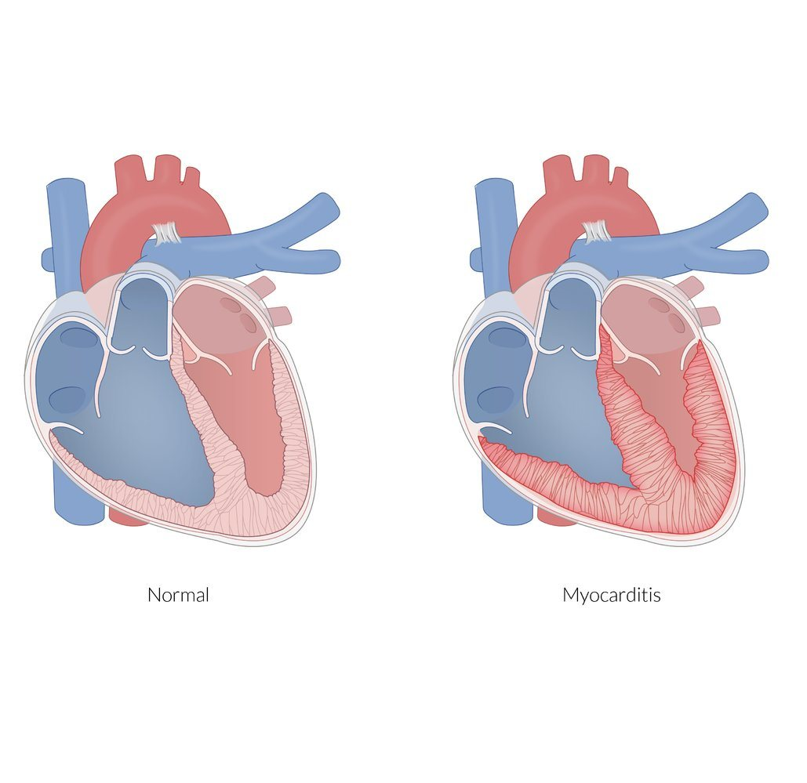
By the agent itself (mostly viruses).
A general immune response (e.g. cytokine storm) injures myocytes.
A focused immune attack on one microbial antigen.
A microbial toxin — best example diphtheria.
| Virus | Genome | Point |
|---|---|---|
| Parvovirus B19 | ss DNA | Most common in current adult data (slapped cheek in kids) |
| HHV-6 | ds DNA | Also most common now (roseola) |
| Coxsackie B (enterovirus) | ss RNA | Classic answer from 1960s–90s (mostly children) — older board questions still use it |
| Adenovirus | ds DNA | With Coxsackie B, shares the CAR receptor on myocytes |
| CMV / EBV, influenza A, RSV, HIV, SARS-CoV-2 | — | Less common |
Caveat: many cases are idiopathic and get assumed viral, so the true share is unknown.
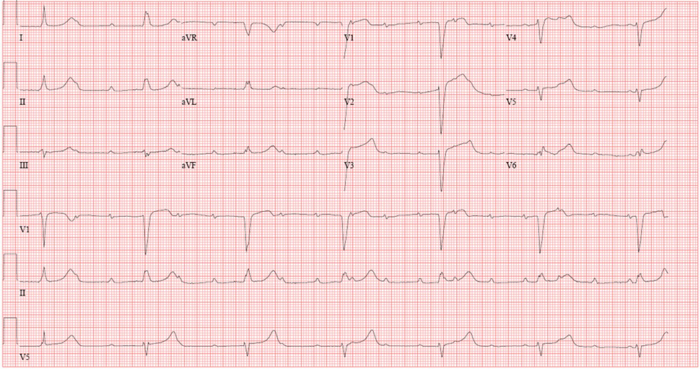
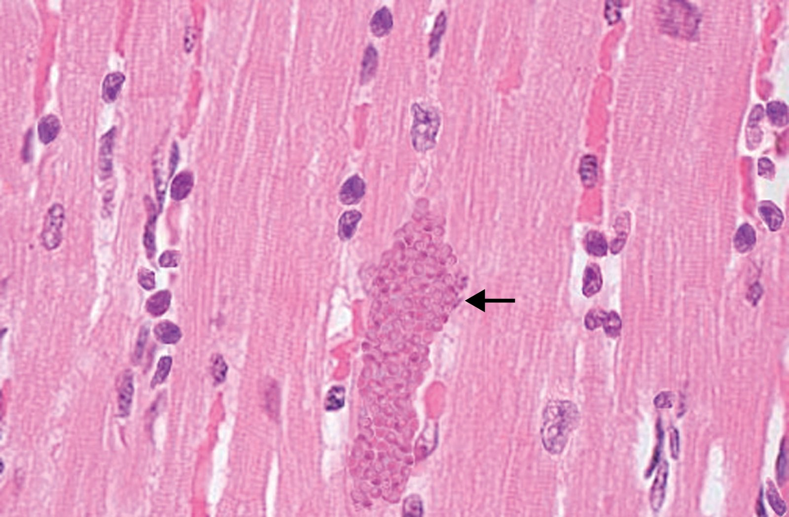
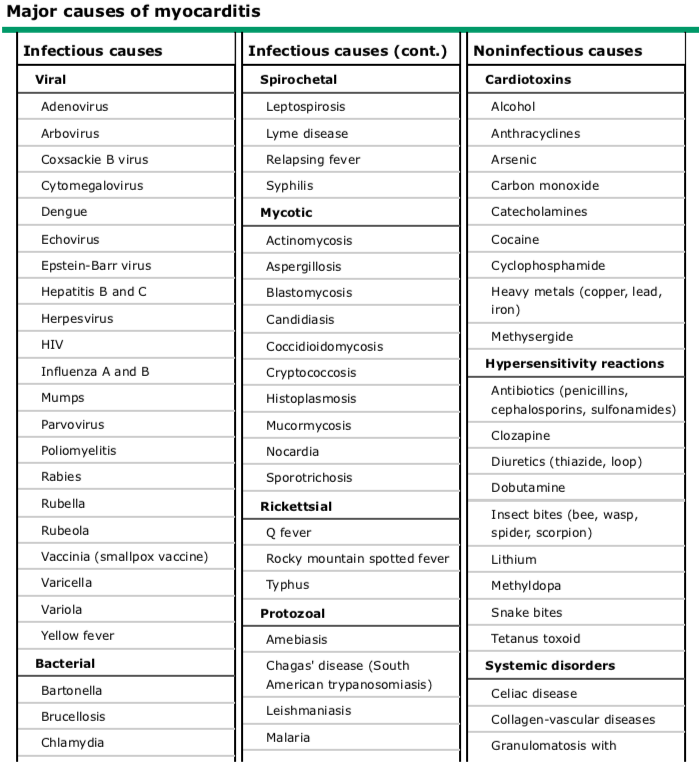
| Pattern | Associated with |
|---|---|
| Lymphocytic | Pathogens (mostly viral), drugs, radiation, immune disorders |
| Eosinophilic | Parasites, hypersensitivity |
| Giant-cell | Autoimmune disorders (non-infectious) |
| Granulomatous | Sarcoidosis (non-infectious) |
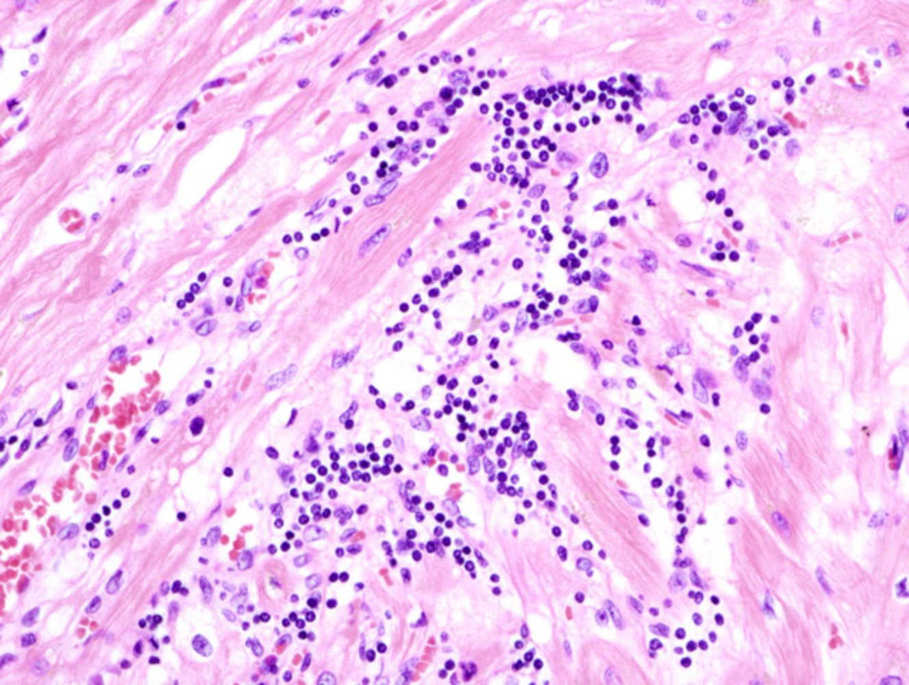
| Form | Picture |
|---|---|
| Subacute | No specific symptoms — only unexplained ↑ troponin or ECG changes |
| Acute | New, unexplained heart failure / chest pain / arrhythmia / dyspnea / leg swelling in a young patient, developing over ≤3 months |
| Chronic | >3 months; alternating cardiomyopathy and stability |
| Fulminant | Sudden cardiac collapse, cardiogenic shock |
Often asymptomatic. Common features: fever, chest pain, unexplained sinus tachycardia, dyspnea, heart failure, arrhythmias/palpitations, syncope, sudden death; also S3/S4 gallop, heart block or new bundle-branch block, new cardiomegaly, hepatomegaly, fatigue, arthralgias. Ask about a preceding viral prodrome (flu-like, URI or GI).
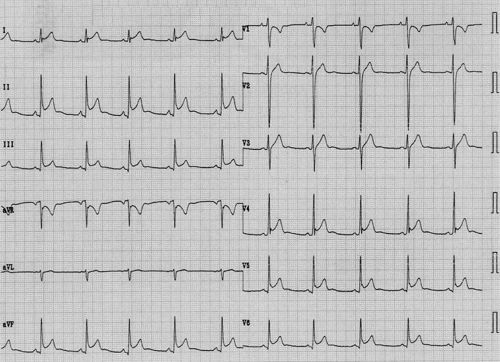
Mostly supportive — treat the heart failure and arrhythmias: diuretics, RAS blockers, β-blockers. Sometimes IVIG or interferon for infectious forms. Specific antibacterial/antifungal/antiparasitic drugs when the agent is known. Antivirals have no proven efficacy.
Q: A 28-year-old develops new heart failure two weeks after a febrile illness; EMB shows lymphocytic infiltrates with myocyte necrosis. Which viruses are most often found in adults today, and which older answer shares a receptor with adenovirus?
Parvovirus B19 and HHV-6 in current data; Coxsackie B is the classic older answer — it and adenovirus use the coxsackie–adenovirus receptor (CAR).
Q: A child with a grey pharyngeal pseudomembrane dies a week later of arrhythmia. Mechanism?
Diphtheria toxin myocarditis — historically the main cause of diphtheria deaths, more than airway obstruction.
Q: A hiker in Connecticut with a recent expanding rash presents with syncope and complete heart block. Diagnosis?
Lyme carditis (Borrelia burgdorferi) — ~10% of Lyme patients develop conduction disease.
The most common pericardial disorder
Double-walled: outer fibrous (inelastic) layer + inner serous membrane, with ~15–50 mL of fluid between. Jobs: keeps the heart positioned in the mediastinum, prevents over-filling, lubricates, and (sometimes) blocks spread of infection from neighbouring organs.
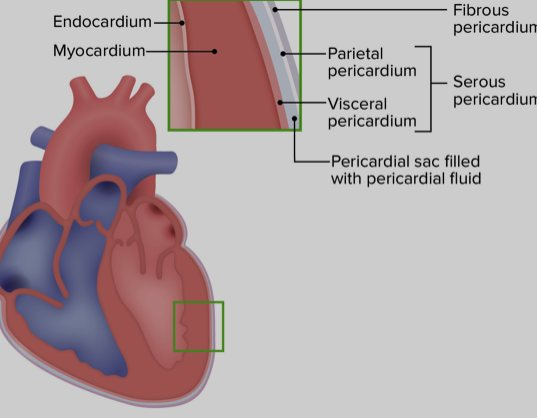
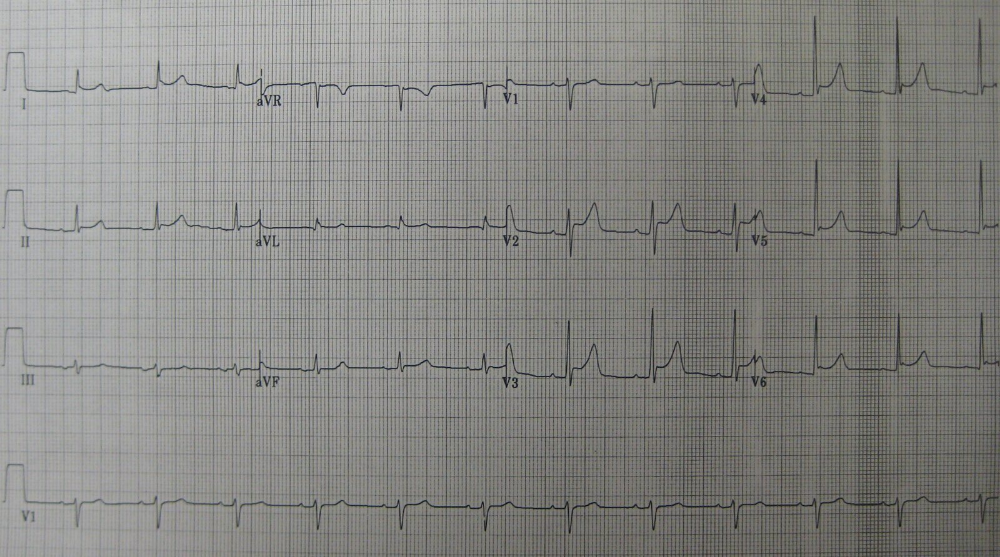
Infection, direct injury, radiation, drugs/toxins, malignancy, autoimmune (SLE, RA). In the US most acute pericarditis is attributed to viruses (again: no agent found → "viral").
| Class | Agents |
|---|---|
| Viruses (most common) | Historic (children): enteroviruses (Coxsackie, echo), influenza · Adults: Parvo B19, CMV, EBV, HIV, SARS-CoV-2 |
| Bacteria → "purulent pericarditis" | S. aureus, streptococci (pneumococcus, viridans), Haemophilus; M. tuberculosis in endemic countries (needs supporting findings, not just geography) |
| Fungi (immunocompromised) | Candida, Aspergillus; rarely environmental Blastomyces, Histoplasma, Coccidioides |
| Parasites (rare) | Toxoplasma, Entamoeba, Echinococcus (tapeworm) |
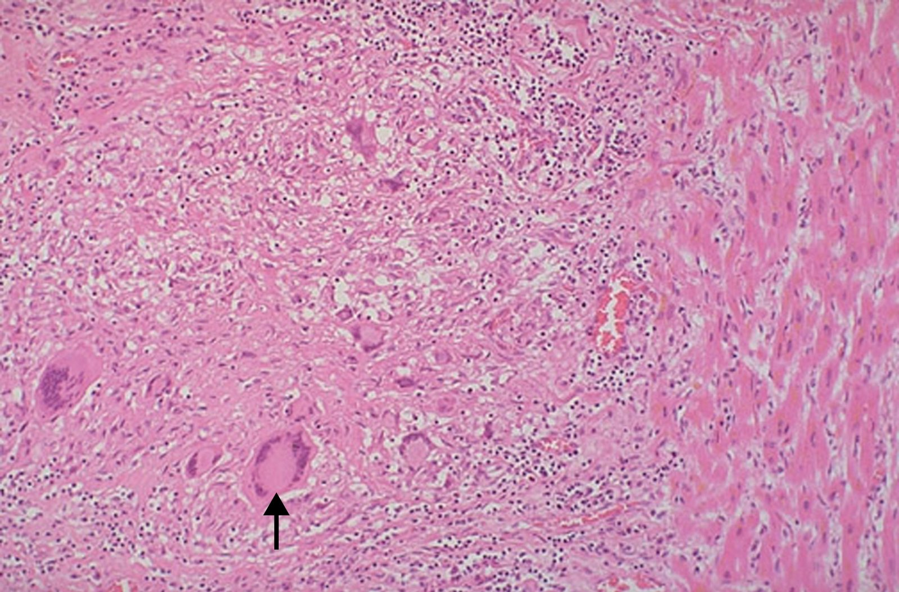
Acute onset, ~3-week course, can recur. Non-specific prodrome: low-grade fever, fatigue, cough, dyspnea (worse lying down), hiccups.
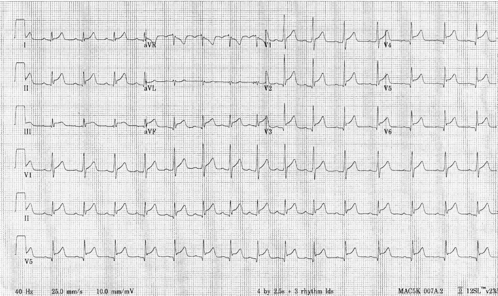
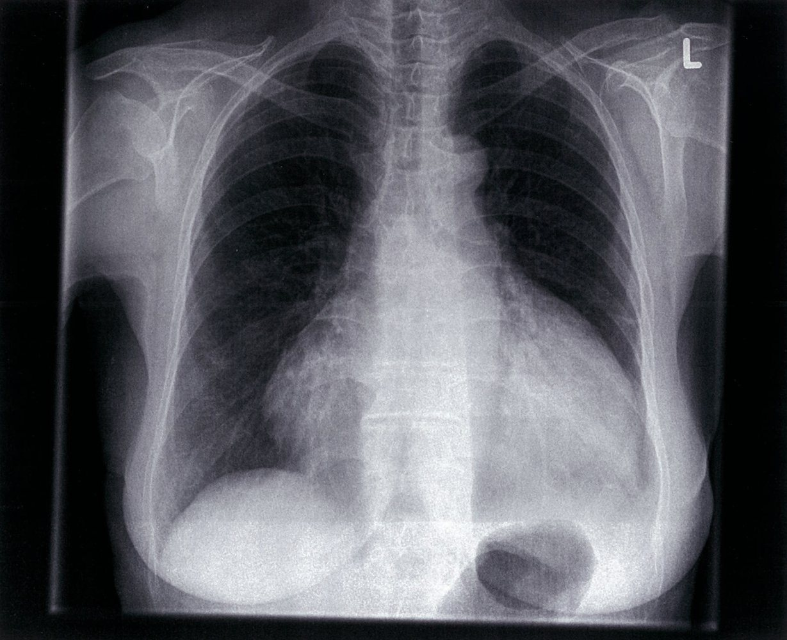
Pericarditis predominates; myocardial involvement present; normal ventricular function.
Myocarditis predominates → reduced ventricular function, with pericardial features.
History (recent viral illness) + exam; ↑ ESR/CRP/CBC; troponin for myocardial damage; chest X-ray, ECG, TTE (effusion). Diagnose with ≥2 of 4:
Reduce inflammation: NSAIDs + colchicine (glucocorticoids if NSAIDs can't be used). Empiric parenteral antimicrobials if bacterial or fungal is suspected. Antivirals: efficacy not proven.
Q: A 30-year-old has sharp chest pain radiating to the left trapezius, worse lying flat and better leaning forward, a week after a cold; ECG shows diffuse ST elevation with PR depression. Diagnosis and first-line treatment?
Acute (viral) pericarditis — treat with NSAIDs + colchicine.
Q: How do myopericarditis and perimyocarditis differ?
Myopericarditis: pericarditis dominates, ventricular function normal. Perimyocarditis: myocarditis dominates, ventricular function reduced.
Every short form used in these notes
OMK 2 Cardio · Infectious Disease 2026 · lecture + outline + targeted-treatment handout